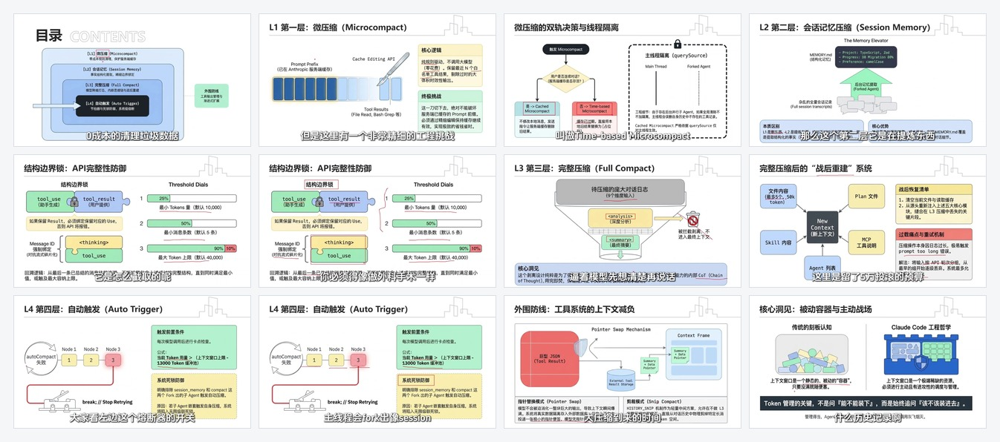

Claude Code 架构拆解
上下文架构解析
这套 PPT 主要讲 Claude Code 如何通过分层压缩、记忆提炼、自动触发和工具减负来管理上下文窗口。
4
压缩层级
L1-L4
核心机制
3
关键能力
- 先讲四层上下文压缩体系分别负责什么，以及为什么要分层治理。
- 再讲会话记忆、结构边界锁、阈值控制这些工程实现细节如何保证压缩不失真。
- 最后落到自动触发、工具结果外置和主动调度，解释上下文窗口为什么需要被精细管理。

内容主线
核心问题不是“上下文能不能装下”，而是“哪些信息值得留下、哪些必须被压缩或外置”。